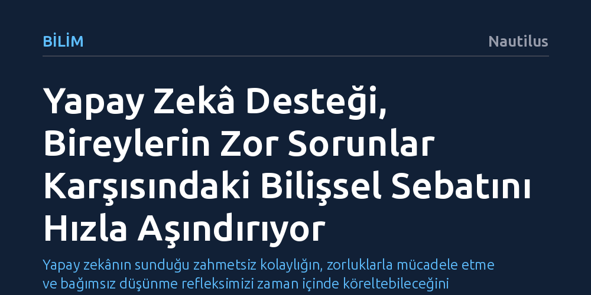

BILIM · Nautilus · 2026-10-13
UC Berkeley araştırmacıları, yapay zekâ desteğiyle problem çözen bireylerin bu destek kesildiğinde hem başarı oranlarının hızla düştüğünü hem de soruları çok daha kolay terk ettiğini belirledi. Bulgular, yapay zekânın uzun vadeli öğrenmenin temeli olan bilişsel sebatı zayıflattığını gösteriyor.
Yapay zekânın sunduğu zahmetsiz kolaylığın, zorluklarla mücadele etme ve bağımsız düşünme refleksimizi zaman içinde köreltebileceğini gösteriyor.

Yapay zekâ araçları günlük hayatımıza ve öğrenme süreçlerimize entegre oldukça, insan zihninin karşılaştığı zorlukları hafifletme vaadi giderek daha cazip hale geliyor. Ancak bu konforun arka planında, bireyin en temel yetilerinden biri olan bilişsel sebatın yıpranması riski yatıyor. Zorlayıcı görevlerle tek başına mücadele etme sürecinin öğrenmenin vazgeçilmez bir parçası olduğu uzun süredir bilinse de üretken yapay zekâ bu süreci tamamen devre dışı bırakma eğilimi taşıyor.
Kaliforniya Üniversitesi Berkeley'den Brian Christian liderliğindeki bir araştırma ekibi, yapay zekâya yaslanmanın zihinsel direnç üzerinde yarattığı erozyonu somut deneylerle ortaya koydu. Dil Modelleme Konferansı'nda sunulan bulgular, yapay zekâ destekli çözümlerin ilk anda verimlilik sağlıyor gibi görünse de uzun vadeli zihinsel dayanıklılığı baltaladığını gösteriyor.
Araştırmacılar, yapay zekânın öğrenme üzerindeki etkilerini ölçmek amacıyla yetişkin katılımcılardan oluşan bir deney tasarladı. İlk aşamada katılımcılara kesirli işlemler içeren matematik problemleri verildi. Deneklerden bir grubu soruları çözerken yanlarında açık duran bir ChatGPT penceresinden yardım aldı; kontrol grubu ise sorularla tek başına mücadele etti. Başlangıçta yapay zekâ kullanan grup, soruları daha yüksek bir doğruluk oranıyla çözdü ve çok daha az soruyu boş bıraktı.
Asıl çarpıcı kırılma noktası, yapay zekâ yardımının aniden kesilmesiyle yaşandı. ChatGPT ekranı kapatılıp her iki grup da yalnızca kendi zihinleriyle baş başa bırakıldığında roller tamamen değişti. Yapay zekâ desteğini kaybeden katılımcıların başarı oranları hızla düşerken, soruları pes edip yanıtsız bırakma eğilimleri fırladı. Buna karşılık, en başından beri tek başına mücadele eden kontrol grubu, yapay zekâ grubunu geride bırakarak daha yüksek sebat ve başarı sergiledi.
Ekip, etkinin yalnızca matematikle sınırlı olup olmadığını anlamak için deneyi SAT sınavından alınan okuduğunu anlama sorularıyla tekrarladı. Sonuç değişmedi: Yapay zekâ desteğine alışan katılımcılar, bu araç ellerinden alındığında hem metinleri anlama doğruluğunda hem de zorlayıcı soruların başında kalma kararlılığında ani bir gerileme yaşadı.
Araştırma ekibi, ortaya çıkan tabloyu "kaynayan kurbağa" metaforuyla açıklıyor. Yapay zekânın bilişsel beceriler üzerindeki olumsuz etkisi birdenbire değil, adım adım ve fark ettirmeden birikiyor. Araştırmacılar bu durumu şu uyarıyla ifade ediyor: “Yapay zekânın sürekli kullanımı uzun vadeli öğrenmeyi besleyen motivasyon ve sebatı aşındırırsa, bu etkiler yıllar içinde birikir ve görünür hale geldiklerinde onları geri çevirmek çok güç olur.”
Zorlukla yüzleşmek ve bir sorunu çözmek için harcanan çaba, sadece doğru cevaba ulaşmayı sağlamaz; aynı zamanda bireyin zihinsel dayanıklılığını ve problem çözme refleksini inşa eder. Yapay zekânın bu üretken mücadeleyi tamamen ortadan kaldırması, bireyleri dışsal bir destek olmadan karmaşık durumlarla baş edemeyen pasif tüketicilere dönüştürme riski taşıyor.
Çalışmanın yalnızca soru-cevap yapabilen görece basit sohbet botlarıyla yürütüldüğünü unutmamak gerekiyor. Günümüzde teknoloji şirketleri, hayatın her alanındaki zihinsel ve pratik sürtünmeyi ortadan kaldırmayı vadeden çok daha gelişmiş otonom yapay zekâ ajanları ve dijital avatarlar üzerinde çalışıyor. Karşılaşılan her engeli kullanıcı yerine aşan bu tür sistemler yaygınlaştıkça, zihinsel tembelliğin kalıcı bir bilişsel erozyona dönüşmesi kaçınılmaz hale gelebilir.
Bilişsel sürtünmenin olmadığı bir dünyada yaşamak ilk bakışta konforlu görünse de insanın kendi potansiyelini geliştirme kapasitesini tehdit ediyor. Bu nedenle yapay zekânın bir düşünme protezi olarak değil, zihinsel çabayı destekleyen ama onun yerini almayan bir araç olarak konumlandırılması kritik bir önem taşıyor.